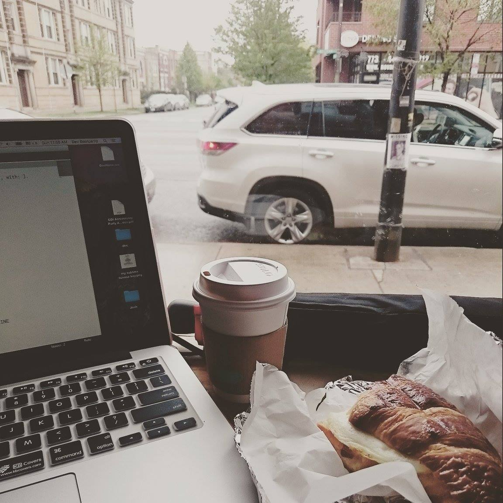

Active Record
A quick and dirty overview of accessing databases via Rails
April 10, 2015

Doing my Ruby challenges at Ipsento, a coffee shop on Western Ave in Bucktown, Chicago!
I digress
I will once again digress because...I arrived in Chicago! This is the moment I have been waiting for, with a lot of excitement and anxiety, for months. I currently live in Salt Lake City, Utah, and it is a small town. Though I grew up in a mega city in Kobe, Japan, it has been a while since I have lived in a big city, and the first time in big-American-city Chicago, so I was quite nervous about the move. Nonethelss I am here, at a fabulous Airbnb in Bucktown, a very "hipster" area, as described by people I've spoken to, and I've had a chance to explore my neighborhood as well as a bit of downtown on State street today - so far, I am super excited about being here!
Active Record
Since I am completely pooped from my packing, moving, adjusting to a new city etc., I am going to be a bit brief in my blog today. Actie Record. What is Active Record. The very quick and dirty description of active record is that is is an interface via Rails (the application framework for Ruby), that allows you to interact with the database, as though it were a ruby object, rather than using SQL queries to access items in the database.
What? English, please...
Ok, so when you are writing an application with ruby on rails, you want to be able access data stored in the database and plug them into objects that you wrote in Ruby. For example, you may have a database with lists of songs and artists. You want to be able to display this list through your ruby application.
Normally you would have to connect to the database, do some kind of SELECT * FROM music table, then convert the list back into an array that you could use in ruby. With Active Record, you could just type Music.all which would give you the array you want from the database. It's magic.
Active Record also allows you to access different types of databases, as long as you have the config/database.yml file configured properly.
Object Relational Mapping (ORM)
An important term to know in talking about Active Record is Object Relational Mapping. ORM is a way for data to be converted and utilized between incompatible systems, i.e., the database and Ruby. ORM allows for an object to be created, which is mapped to the database, that a language like Ruby can use in its code, in a human-readable language.
Conclusion
There is still quite a bit for me to learn about Active Record and ORM but I get the impression that this will be very useful in buildling real applications. Knowing SQL is great, but Active Record will allow me to stay close to the Ruby on Rails language to access the databse. Can't wait to learn more about it!